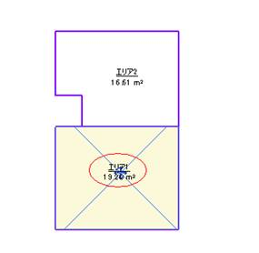
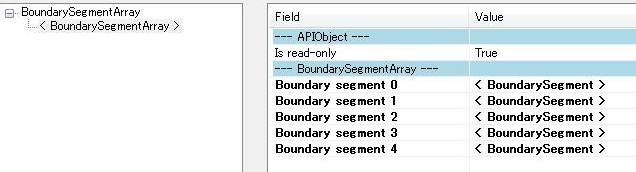
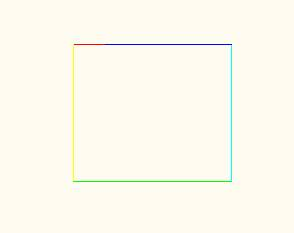

Area Boundary Segments
Here are some notes on the properties and ordering of area boundary segments from a case handled by my colleagues Katsuaki Takamizawa, Harry Mattison and Tamas Badics:
Question: I am analysing a Revit area element, marked below by the red circle, with another adjacent area beside it:

I would have assumed this area to have 4 segments in its boundary. When I use the RvtMgdDbg snoop functionality to explore it, though, it displays 5 segments:

Is this the expected behaviour? If so, I cannot simply use the vertex and edge count to analyse an area and determine whether it is triangular or rectangular. Instead, I have to check whether adjacent edges are parallel, and if so, treat them as one edge instead of two.
Concerning the ordering of edges, I have drawn the lines using the edge coordinates, starting from segment 0 in red and ending with segment 4 in dark blue:

The boundary segments seem to be stored in counter clockwise order. Is this always true?
Answer: The order of storage is counter clockwise for outer boundaries and clockwise for inner boundaries. For instance, imagine a room with an island at the centre. It will have two boundaries, one outer, and one inner.
As for the number of segments, what you see is expected in this situation.
Questions for you
By the way, before we close, I have two questions for you:
- Is anyone out there using RealDWG inside a Revit add-in, to read DWG files in native format?
- Does anyone know of a profiler that works with Revit 2010 add-ins?
Thank you!